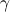
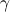
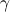
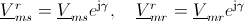

and
and
 are related by
are related by
 where

is the electrical angle between stator and rotor.
where

is the electrical angle between stator and rotor.
Standard package icon.
Extends from Modelica.Icons.Package (Icon for standard packages).
| Name | Description |
|---|---|
PermanentMagnet | Permanent magnet model without intrinsic reluctance, represented by magnetic potential difference |
QuasiStaticAnalogWinding | Quasi static single phase winding neglecting induced voltage |
RotorSaliencyAirGap | Air gap model with rotor saliency |
SaliencyCageWinding | Rotor cage with saliency in d- and q-axis |
SymmetricMultiPhaseCageWinding | Symmetrical rotor cage |
SymmetricMultiPhaseWinding | Symmetric winding model coupling electrical and magnetic domain |
The symmetrical multi phase winding consists of a symmetrical winding resistor, a stray reluctance, a symmetrical multi phase electromagnetic coupling and a core loss model including heat port.
QuasiStaticAnalogWinding, Magnetic.FundamentalWave.BasicMachines.Components.SinglePhaseWinding, Magnetic.FundamentalWave.BasicMachines.Components.SymmetricMultiPhaseWinding
| Type | Name | Default | Description |
|---|---|---|---|
Integer | m | 3 | Number of phases |
Boolean | useHeatPort | false | Enable / disable (=fixed temperatures) thermal port |
Resistance | RRef | Winding resistance per phase at TRef | |
Temperature | TRef | Reference temperature of winding | |
LinearTemperatureCoefficient20 | alpha20 | Temperature coefficient of winding at 20 degC | |
final LinearTemperatureCoefficient | alphaRef | Modelica.Electrical.Machines.Thermal.convertAlpha(alpha20, TRef, 293.15) | |
Temperature | TOperational | Operational temperature of winding | |
Inductance | Lsigma | Winding stray inductance per phase | |
Real | effectiveTurns | 1 | Effective number of turns per phase |
Conductance | GcRef | Electrical reference core loss reluctance |
| Type | Name | Description |
|---|---|---|
PositivePlug | plug_p | Positive plug |
NegativePlug | plug_n | Negative plug |
NegativeMagneticPort | port_n | Negative complex magnetic port |
PositiveMagneticPort | port_p | Positive complex magnetic port |
HeatPort_a | heatPortWinding[m] | Heat ports of winding resistors |
HeatPort_a | heatPortCore | Heat ports of winding resistor |
The single phase winding consists of a resistor, and a single phase electromagnetic coupling.
SymmetricMultiPhaseWinding, Magnetic.FundamentalWave.BasicMachines.Components.SinglePhaseWinding, Magnetic.FundamentalWave.BasicMachines.Components.SymmetricMultiPhaseWinding
| Type | Name | Default | Description |
|---|---|---|---|
Boolean | useHeatPort | false | Enable / disable (=fixed temperatures) thermal port |
Resistance | RRef | Winding resistance per phase at TRef | |
Temperature | TRef | Reference temperature of winding | |
LinearTemperatureCoefficient20 | alpha20 | Temperature coefficient of winding at 20 degC | |
final LinearTemperatureCoefficient | alphaRef | Modelica.Electrical.Machines.Thermal.convertAlpha(alpha20, TRef, 293.15) | |
Temperature | TOperational | Operational temperature of winding | |
Real | effectiveTurns | 1 | Effective number of turns per phase |
| Type | Name | Description |
|---|---|---|
PositivePin | pin_p | Positive pin |
NegativePin | pin_n | Negative pin |
NegativeMagneticPort | port_n | Negative complex magnetic port |
PositiveMagneticPort | port_p | Positive complex magnetic port |
HeatPort_a | heatPortWinding | Heat ports of winding resistor |
This salient air gap model can be used for machines with uniform air gaps and for machines with rotor saliency. The air gap model is not symmetrical towards stator and rotor since it is assumed the saliency always refers to the rotor. The saliency of the air gap is represented by a main field inductance in the d- and q-axis.
For the mechanical interaction of the air gap model with the stator and the rotor is equipped with two
rotational connectors. The torques acting on both connectors have the same absolute values but different signs. The stator and the rotor reference angles,
and
are related by
where

is the electrical angle between stator and rotor.
The air gap model has two magnetic stator and two magnetic rotor ports. The magnetic potential difference and the magnetic flux of the stator and rotor are equal complex quantities, respectively, but the reference angles are different; see Concept. The d and q axis components with respect to the rotor fixed reference frame (superscript r) are determined from the stator (superscript s) and rotor (superscript r) reference quantities, by
.
The d and q axis magnetic potential difference components and flux components are related with the flux by:

Magnetic.FundamentalWave.BasicMachines.Components.RotorSaliencyAirGap
| Type | Name | Default | Description |
|---|---|---|---|
Integer | p | Number of pole pairs | |
SalientInductance | L0 | Salient inductance of a single unchorded coil w.r.t. the fundamental wave | |
SalientReluctance | R_m | Reluctance of the air gap model |
| Type | Name | Description |
|---|---|---|
PositiveMagneticPort | port_sp | Positive complex magnetic stator port |
NegativeMagneticPort | port_sn | Negative complex magnetic stator port |
PositiveMagneticPort | port_rp | Positive complex magnetic rotor port |
NegativeMagneticPort | port_rn | Negative complex magnetic rotor port |
Flange_a | flange_a | Flange of the rotor |
Flange_a | support | Support at which the reaction torque is acting |

The symmetric rotor cage model of this library does not consist of rotor bars and end rings. Instead the symmetric cage is modeled by an equivalent symmetrical winding. The rotor cage model consists of
 phases. If the cage is modeled by equivalent stator winding parameters, the number of effective turns,
phases. If the cage is modeled by equivalent stator winding parameters, the number of effective turns,
 , has to be chosen equivalent to the effective number of stator turns.
, has to be chosen equivalent to the effective number of stator turns.
SaliencyCageWinding, Magnetic.FundamentalWave.BasicMachines.Components.SymmetricMultiPhaseCageWinding Magnetic.FundamentalWave.BasicMachines.Components.RotorSaliencyAirGap
Extends from Modelica.Magnetic.QuasiStatic.FundamentalWave.Interfaces.PartialTwoPortExtended (Partial two port for graphical programming with additional variables).
| Type | Name | Default | Description |
|---|---|---|---|
Integer | m | 3 | Number of phases |
Boolean | useHeatPort | false | Enable / disable (=fixed temperatures) thermal port |
Resistance | RRef | Winding resistance per phase at TRef | |
Temperature | TRef | Reference temperature of winding | |
LinearTemperatureCoefficient20 | alpha20 | Temperature coefficient of winding at 20 degC | |
final LinearTemperatureCoefficient | alphaRef | Modelica.Electrical.Machines.Thermal.convertAlpha(alpha20, TRef, 293.15) | |
Temperature | TOperational | Operational temperature of winding | |
Inductance | Lsigma | Cage stray inductance | |
Real | effectiveTurns | 1 | Effective number of turns |
final Integer | nBase | Modelica.Electrical.MultiPhase.Functions.numberOfSymmetricBaseSystems(m) | Number of base systems |
| Type | Name | Description |
|---|---|---|
PositiveMagneticPort | port_p | Positive quasi-static magnetic port of fundamental wave machines |
NegativeMagneticPort | port_n | Negative quasi-static magnetic port of fundamental wave machines |
HeatPort_a | heatPortWinding | Heat ports of winding resistor |
The salient cage model is a two axis model with two phases. The electromagnetic coupling therefore is also two phase coupling model. The angles of the two orientations are 0 and  . This way an asymmetrical rotor cage with different resistances and stray inductances in d- and q-axis can be modeled.
. This way an asymmetrical rotor cage with different resistances and stray inductances in d- and q-axis can be modeled.
SymmetricMultiPhaseWinding, Magnetic.FundamentalWave.BasicMachines.Components.SymmetricMultiPhaseCageWinding Magnetic.FundamentalWave.BasicMachines.Components.RotorSaliencyAirGap
Extends from Modelica.Magnetic.QuasiStatic.FundamentalWave.Interfaces.PartialTwoPortExtended (Partial two port for graphical programming with additional variables).
| Type | Name | Default | Description |
|---|---|---|---|
Boolean | useHeatPort | false | Enable / disable (=fixed temperatures) thermal port |
SalientResistance | RRef | Salient cage resistance | |
Temperature | TRef | Reference temperature of winding | |
LinearTemperatureCoefficient20 | alpha20 | Temperature coefficient of winding at 20 degC | |
final LinearTemperatureCoefficient | alphaRef | Modelica.Electrical.Machines.Thermal.convertAlpha(alpha20, TRef, 293.15) | |
Temperature | TOperational | Operational temperature of winding | |
SalientInductance | Lsigma | Salient cage stray inductance | |
Real | effectiveTurns | 1 | Effective number of turns |
| Type | Name | Description |
|---|---|---|
PositiveMagneticPort | port_p | Positive quasi-static magnetic port of fundamental wave machines |
NegativeMagneticPort | port_n | Negative quasi-static magnetic port of fundamental wave machines |
output ComplexOutput | i[2] | Cage currents |
output RealOutput | lossPower | Damper losses |
HeatPort_a | heatPortWinding | Heat ports of winding resistor |
Permanent magnet model with magnetic, mechanical and thermal connector including losses. The PM model is source of constant magnetic potential difference. The PM loss is calculated by PermanentMagnetLosses.
Extends from Modelica.Magnetic.QuasiStatic.FundamentalWave.Losses.PermanentMagnetLosses (Model of permanent magnet losses dependent on current and speed) and Modelica.Magnetic.QuasiStatic.FundamentalWave.Interfaces.PartialTwoPort (Partial two port for graphical programming).
| Type | Name | Default | Description |
|---|---|---|---|
Integer | m | 3 | Number of phases |
PermanentMagnetLossParameters | permanentMagnetLossParameters | Permanent magnet loss parameters | |
Boolean | useHeatPort | false | =true, if heatPort is enabled |
ComplexMagneticPotentialDifference | V_m | Complex(re = 1, im = 0) | Complex magnetic potential difference w.r.t. the rotor fixed reference frame |
| Type | Name | Description |
|---|---|---|
Flange_a | flange | Shaft end |
Flange_a | support | Housing and support |
HeatPort_a | heatPort | Optional port to which dissipated losses are transported in form of heat |
PositiveMagneticPort | port_p | Positive quasi-static magnetic port of fundamental wave machines |
NegativeMagneticPort | port_n | Negative quasi-static magnetic port of fundamental wave machines |
Generated 2018-10-22 14:46:05 EDT by MapleSim.